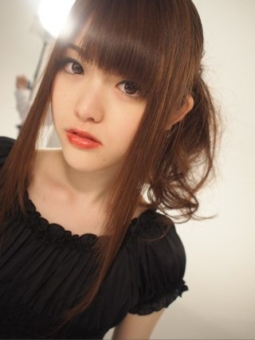
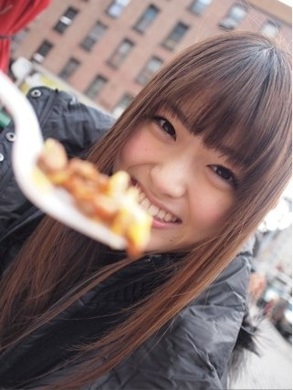
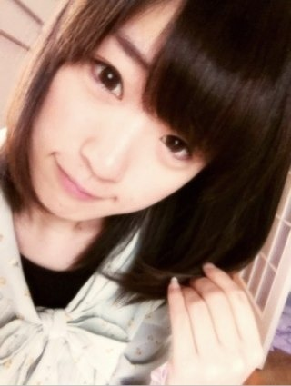

2012/0430Mon（TvT）.。oO（かずみん×59

2012/0427Fri（´-`）.｡oO(かずみん×58
こんばんは( ´ ▽ ` )
いつもコメントありがとうございます！
今日も乃木坂浪漫の撮影でした(^-^)
衣装ステキだったなぁ〜♪
ベリキューの甘酸っぱい春にサクラサク
を歌いたくなりました(#^.^#)
次回の浪漫もお楽しみに！
--------
さて、今日もNYの写真を載せたいと
思います(*^^*)
なんだかROCKな壁だったので、
アートフィルターでトイフォトにして
撮っていただきました^^
ロックといえば百恵ちゃんの
ロックンロールウィドウ！
ああ、ファイナルコンサートのDVDを
見てると本当にかっこいいなぁと、
そして美しいなぁと思います。
この前録画してたちびまる子ちゃんを
見たら百恵ちゃんが...！
まるちゃんと友達になりたいです(^-^)
ちなみに生駒ちゃんの第一印象は
まるちゃんに喋り方似てるなぁでした！笑
------
ついに明後日、明々後日は
大阪で握手会！
大阪久しぶりです(*^_^*)
楽しみだなぁ♭.°
なんだか握手会も久しぶりな気がします。
ファンのみなさん不足です(>_<)
パワーをもらいに！いざ！
楽しみに待ってます\(//∇//)\
-------
前回の乃木坂浪漫で
前にソフトクリーム屋さんで
バイトしてた話をしました^^
私の高校は基本バイトNGだったので
夏だけしてましたよ(^-^)/
他には民宿でもバイトしてました！
大変だったけど楽しかったなぁ（´-`）.｡o
みなさんはどんなバイトしたい？
もしくは、したことありますか(*^^*)？
-------
最後に、さゆりんご推しのみなさんへ
素晴らしいまっつんの一枚をどうぞ。

まっつんは笑顔もいいけど、
こんな表情もどきっとしますね\(//∇//)\
---------
今日はこの辺で( ´ ▽ ` )ﾉ
過ごしやすい気温になってきましたが、
体調にはお気をつけて、
勉強に仕事に頑張って下さい。
それではおやすみなさい
..zzz
2012/0423Mon（´-`）.｡oO(かずみん×57
コメントすべて読ませてもらってますよ^^
本当にジャケ写が...(T_T)笑
...今日はまあやの誕生日(=´∀｀)人(´∀｀=)
大好きなまあや！
おめでとう(*^^*)
-----
そしてそんなまあやの誕生日を
高山は大分で迎えました！
番組ロケとPRをかねて、福岡と大分へ
行ってました。
暖かいみなさんの笑顔で癒されましたよ(*^^*)
ありがとうございました！
次ファンの皆様と会えるのはいつだろう...
大阪握手会かなぁ...
もっとお会いできる機会が増えれば
いいなぁ...
あ、ミニ握手会が開催されることに
なりましたね(*^^*)
2012年5月4日(金・祝) 16:00〜
イオンモール羽生 1F西コート で
開催します！
なぁちゃん、美雲ちゃん、陽菜ちゃん
と一緒に皆様をお待ちしています！
早くみなさんと会いたいなぁ(*^_^*)
こんなに握手会がたくさんあると
みなさんとすごく距離を縮められる
気がして、とっても嬉しいです！
楽しみにしてます\(//∇//)\
---------
さて、NYでの写真いきます( ´ ▽ ` )ﾉ

街並みがすごく綺麗でした。
また行きたいなぁ〜(#^.^#)
-------
最近すぐ足を組んでしまう高山です。
骨盤がゆがんでるのかな〜(>_<)
整体に行きたいです！
(何の報告??笑)
この間せいたんの肩をもませてもらったら
『うまいなぁ』と褒めてくれた(*^^*)
なので、今度のイベントは
"高山一実肩揉みイベント"なんて
どうでしょう( ´ ▽ ` )？笑
でもいつか...歌やダンスで
みなさんを癒してあげれたら
いいなぁ（´-`）.｡oO
それくらい歌には大きな力があると
思うのです。
---
今日の写メはまいやんと(#^.^#)

大分でお饅頭食べました♪
美味しかった(^-^)
ちなみにまいやんは白いだけに
白あんを食べてましたよ(*^^*)
まいやんは顔はもちろん、
食べる物も洋服もすべてTHE女の子！
例)ソフトクリーム
まいやん→ストロベリー
たかやま→抹茶
みたいな...笑
とにかく大好きです♪(´ε｀ )
-----
今日はこの辺で^^
それでは、お身体に気をつけて、
明日からも勉強やお仕事
頑張ってください。
おやすみない...
2012/0420Fri（´-`）.｡oO(かずみん×56
いつも応援ありがとうございます！
コメント全部読ませてもらってます(*^_^*)
とっても心が温まります^^
ありがとう。
今は録画していたニュース見てます！
ダイバーシティ行きたいなぁ♪
-------
今日は記者会見がありました！
なんと、乃木坂46がHTC Jの
アンバサダーに就任させていただいたのです！
本当に嬉しいです！
HTC Jの良さが沢山の人に伝わるように、
一生懸命頑張りますので、
よろしくお願いします！
実は先日、
CM撮影でNYへ行ってたのです！
初NY!!楽しかった(#^.^#)
沢山パンケーキで写真撮りましたよ！
少しずつ載せていきますね。
まずは...

NYフードとまっつん！
あーんしてくれてます^^
ホテルもまっつんと同じ部屋でした♪
二人で甘いもの沢山食べちゃった(￣▽￣)
いい思いでです！
CMお楽しみに〜(*^^*)
--------
まあやに今日
『かずみん、あたしのブログ見て☆』
と言われたのでさっき見ました(^-^)/
とっても嬉しいことが沢山書いてあって
嬉しかった\(//∇//)\
可愛い妹です^^あ、でも精神年齢は一緒！笑
まあやはどんどんかわいくなってきたなぁ...
そして何よりとても優しい子なので、
私も見習わなければ！ ( ´ ▽ ` )ﾉ
----------
あ！そうそう！
おいでシャンプーのジャケットを見た
んですよ！
...
裏表紙の顔...ヽ(；▽；)ノ
目が死んでます(>_<)
オーマイガ〜！泣
みなさん覚悟してて下さい...
うわっ、高山ひどっ！
ってなるはず(；´Д`A
ごめんなさい(T_T)
ぜひネタにして下さい(￣▽￣)泣
------
今週もお疲れ様でした！
土日は天気はあまり良くないようですが、
ゆっくりお休みください。
私はお仕事楽しみます(*^^*)
それでは、お休みなさい...☆

2012/0418Wed（´-`）.｡oO(かずみん×55
ただいま〜(*^_^*)
リアルタイムかずみだぜぜぜぜぜーい！笑
上から撮ったらショートに見える？
前回もコメント ありがとうございました！
みなさんの幸せを知れて良かったです^^
『辛』という字に一を足すと『幸』
ですからね！
辛いことがあっても
いつかは幸がくる(*^_^*)
--------
さて 、今日はオフなので、たまった新聞
でも読もうと思います！
最近なかなかニュースが見れなくて、
日本の政治がどうなっているのか
わからなくなってきました(><)大変
大橋アナみたいになりたい！←無理無理
ハロプロの新曲については詳しいですよ(^-^)/
今発売中のトップエールに
道重さんの取材記事があったのですが、
読んでて感動しました。
私も頑張ります(#^.^#)
--------
だんだん気候も暖かくなってきたので、
この間夏服を買いに行ったんですよ！
アベイル！！
アベイルは安いので1890円が
沢山です( ´ ▽ ` )ﾉ
だから大好き〜！
でもいつかはMILKとか着てみたいなぁ...
その日が来るまで、
MILKが似合う女の子を目指したいです！
聖子ちゃんみたいに...\(//∇//)\
え？高山にはもんぺが似合うって？
...実は乃木坂浪漫でもんぺのシーンが
あったんです。笑
でもあまりにアイドルっぽくはなくなって
しまったのでお蔵入りになりました！笑
いくちゃんとの差...（´-`）.｡oO
--------
あ、気づいたらAKB共和国やってた！
テレビって難しい（ ; ; ）
へっくしょん！
...今くしゃみが2回出ました。
誰かが悪い噂してるぞ(T_T)
もっと頑張らなくては(^-^)
今見るのは上へ上へ。
それでは、みなさん、お身体には気をつけて
勉強に仕事に頑張ってくださいね！
おやすみなさい。
ps一眼の写真はまだ情報解禁でないもの
なので待っててくださいね！